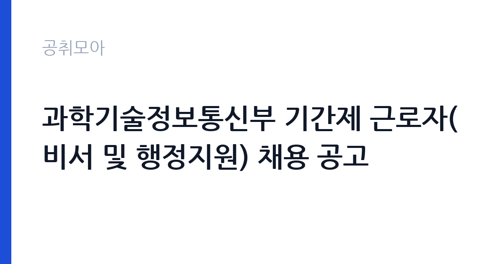

[국가기관] 과학기술정보통신부 기간제 근로자(비서 및 행정지원) 채용 공고
과학기술정보통신부 · 세종 · 마감 2026-10-26 (D-11) · 출처 나라일터

한눈에 보는 모집 조건
| 기관 | 과학기술정보통신부 |
|---|---|
| 공고명 | 과학기술정보통신부 기간제 근로자(비서 및 행정지원) 채용 공고 |
| 고용형태 | 기간제 |
| 근무지 | 세종 |
| 게시일 | 2026-10-16 |
| 마감일 | 2026-10-26 (D-11) |
지원자격, 이렇게 읽으세요
- 기간제 근로자 2명
- 접수 ~2026-10-26 마감
- 세부 조건은 원문 공고문 확인
지원자격에서 눈여겨볼 점은 우대요건입니다. 관련 경력 보유자와 관련자격증 보유자가 우대 대상으로 적혀 있어 비서나 행정지원 실무 경험이 있으면 서류에서 앞설 수 있습니다. 필수 자격으로 못 박은 항목은 공고 요약에 드러나지 않았으므로 첨부 공고문의 응시자격 항목을 반드시 확인하셔야 합니다. 비서A와 비서B의 근무 시작 시점이 다르니 본인이 즉시 근무 가능한 일정인지도 미리 따져보시기 바랍니다.
이 공고의 포인트
이 공고의 매력은 중앙부처인 과기정통부에서 1년 반에서 2년 가까이 근무할 수 있다는 점입니다. 비서A는 채용 후 2028년 4월까지, 비서B는 2027년 1월부터 2028년 6월까지라 단기 아르바이트가 아니라 경력으로 적을 만한 기간입니다. 세종 청사 근무라 수도권 분은 이전 부담을 따져야 하지만 중앙부처 비서 경력은 이후 공공기관 행정직 지원 때 자기소개서 소재가 됩니다. 모집인원이 2명이라 한 자리에 여러 명이 몰리는 구조는 아닙니다.
전형은 어떻게 진행되나
접수 기간은 10월 16일부터 10월 26일까지이며 이메일과 등기우편 접수를 병행합니다. 담당자 이메일과 문의전화 044-202-4147이 공개되어 있으니 접수 확인이 필요하면 직접 문의하실 수 있습니다. 전형은 서류와 면접 순으로 진행되는 것이 일반적이며 세부 일정은 원문 공고에서 확인하셔야 합니다. 비서직은 면접에서 문서 작성 능력과 응대 태도를 함께 보므로 예상 질문을 미리 정리해 두시기 바랍니다.
원문에서 확인한 전형 방식
○ 모집분야 : 기간제 근로자(비서 및 행정지원) ○ 모집인원 : 2명 ○ 근무기간 : 비서A(채용일 ~ 2028.4.23) / 비서B(2027.1.4.~2028.6.30.) ○ 우대요건 : 관련경력 보유자, 관련자격증 보유자 ○ 접수기간 : 2026년 10월 16일 ~ 10월 26일 ○ 응시방법 : 이메일(kokoj234@Korea.kr) 및 등기우편 접수 ○ 문의처 : 044-202-4147
이런 분께 추천해요
- 중앙부처 비서나 행정지원 경력을 쌓아 이직 발판으로 삼고 싶은 분께 적합합니다.
- 워드와 엑셀 등 문서 작업에 익숙하고 일정 관리에 강점이 있는 분께 권합니다.
- 세종 근무가 가능하고 1년 이상의 안정적인 근무를 원하는 분께 잘 맞습니다.
지원 전 체크리스트
- 비서A와 비서B 중 본인이 지원 가능한 근무 시작 시점을 먼저 정했습니다.
- 관련 경력과 자격증을 증빙할 서류를 빠짐없이 준비했습니다.
- 이메일 접수 후 담당 부서에 수신 확인 전화를 했습니다.
- 등기우편 접수 시 마감일 도착 기준인지 공고문에서 확인했습니다.
모집 일정과 제출 타이밍
공고 등록과 접수가 같은 10월 16일에 시작되어 10월 26일에 마감됩니다. 접수 기간이 11일로 넉넉한 편이지만 비서B는 내년 1월 시작이라 연말 일정과 겹치지 않는지 확인하시기 바랍니다. 서류전형 합격자 발표와 면접 일정은 원문 공고의 전형 일정을 따르며 발표 후 면접까지 텀이 짧을 수 있으니 면접 준비는 서류 접수와 함께 시작하시기 바랍니다. 최종 임용 시기는 비서A와 비서B가 다르다는 점을 다시 한번 확인하시기 바랍니다.
직무 이해하기: 국가기관
비서와 행정지원 업무는 간부와 부서의 일정 관리가 중심입니다. 회의 일정 조율과 출장 지원, 문서 수발과 결재 보조가 일상 업무이며 예산 집행 서류를 다룰 때는 규정 숙지가 필요합니다. 중앙부처 특성상 국회 대응 자료나 대외 행사 지원이 갑자기 들어올 수 있어 우선순위 판단이 중요합니다. 전화 응대와 내방객 안내처럼 겉으로 드러나는 업무에서 부서의 인상이 정해지므로 기본 예절과 빠른 문서 처리가 실무 평가의 기준이 됩니다.
자기소개서 작성 팁
비서직 자기소개서에서는 일정 관리와 문서 처리의 정확성을 보여주는 경험이 핵심입니다. 촉박한 일정 속에서 회의와 출장을 조율했던 사례나 오류 없이 대량의 문서를 처리했던 경험을 숫자와 함께 쓰시면 설득력이 생깁니다. 보안이 중요한 부처라는 점을 언급하며 비밀 유지와 규정 준수 의식을 드러내시면 좋습니다. 워드와 엑셀 활용 수준은 막연한 상중하 표기보다 실제 작성했던 문서 종류로 증명하시기 바랍니다.
면접 준비 포인트
면접에서는 비서로서의 상황 대처 능력을 묻는 질문이 나옵니다. 상충되는 일정이 겹쳤을 때의 우선순위 판단 기준을 본인의 원칙으로 정리해 두시기 바랍니다. 문서 작성 능력을 확인하기 위해 공문서 양식이나 결재선 개념을 간단히 묻는 경우도 있으니 기본 용어는 익혀두셔야 합니다. 세종 근무와 근무 기간에 대한 질문에는 지원 동기와 연결된 현실적인 답변을 준비하시면 좋은 인상을 남기실 수 있습니다.
급여·근무조건 읽는 법
이번 공고 본문에는 보수 금액이 공개되어 있지 않아 정확한 급여는 원문 공고문에서 확인하셔야 합니다. 중앙부처 기간제 근로자의 보수는 기관별 기간제 보수 기준에 따라 책정되며 경력과 자격에 따라 협의되는 경우도 있으니 공고문의 보수 항목을 먼저 보시기 바랍니다. 참고로 국가기관 공무직과 기간제의 임금은 최저임금 이상에서 기관 기준표로 정해지며 명절휴가비 지급 여부도 기관마다 다르므로 원문 확인이 필수입니다. 기본급 외 수당과 실수령액은 4대 보험과 세금 공제 후 달라지며 경쟁률과 합격선도 공개되지 않았습니다.
자주 묻는 질문
- 비서A와 비서B의 차이가 무엇인가요?
근무 기간과 시작 시점이 다릅니다. 비서A는 채용일부터 2028년 4월 23일까지, 비서B는 2027년 1월 4일부터 2028년 6월 30일까지 근무합니다. 본인의 가능 일정에 맞는 자리를 선택해 지원하시기 바랍니다. - 자격증이 없으면 지원할 수 없나요?
자격증은 우대요건으로 안내되어 있어 필수는 아닙니다. 다만 관련 경력이나 자격증 보유자가 우대받으므로 필수 응시자격은 원문 공고문의 자격 항목에서 확인하시기 바랍니다. - 근무지는 어디인가요?
근무지역은 세종특별자치시이며 과학기술정보통신부 청사에서 근무합니다. 정부세종청사 입주 부처라 통근버스와 관사 제도는 부처 기준에 따르므로 필요하시면 문의처로 확인하시기 바랍니다.
함께 보면 좋은 공고
[국가기관] 국립한글박물관 공무직근로자(시설주임(전기)) 채용 공고 — 마감 2026-10-26[국가기관] [공군 제11전투비행단] 공무직근로자(시설관리원) 채용 공고 — 마감 2026-10-29[국가기관] [공군 제11전투비행단] 공무직근로자(청소관리원) 채용 공고 — 마감 2026-10-29출처: 나라일터 공개정보를 바탕으로 공취모아가 정리한 안내글입니다. 모집 조건·일정은 변경될 수 있으니 지원 전 반드시 원문 공고문을 확인하세요. 본 글은 정보 제공용이며 합격을 보장하지 않습니다.